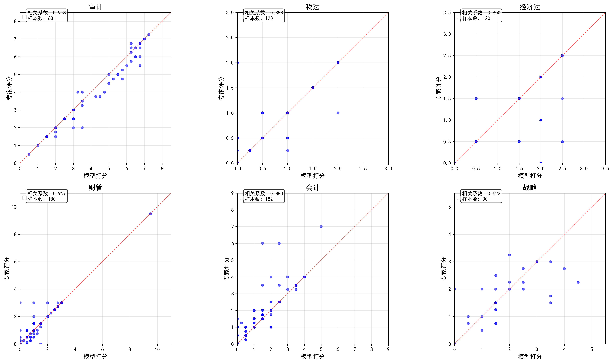

专家标注分布分析
本节通过条形图展示各类标注原因的分布情况，包含出现次数、占比和平均调整分值。
经济法 - 模型打分偏低
记录数: 2 | 标注数: 2

战略 - 模型打分偏高
记录数: 2 | 标注数: 2

本报告汇总了模型评分与教师评分在多个维度下的误差统计分析，包括不同试卷、题型、分值下的分布可视化和一致性对比。
下面是关于各科目各试卷从小题和大题两个层面下一些基本情况的统计。
| 科目名称 | 试卷ID | 数据量 | 题目数量 | 题目平均分值 | 题目最高分值 | 题目最低分值 |
|---|---|---|---|---|---|---|
| 会计 | 1834829(1)_初版 | 1053 | 13 | 3.077 | 6 | 1 |
| 战略 | 1822327(1)_初版 | 702 | 17 | 2.941 | 5 | 1 |
| 1835285(1)_初版 | 227 | 9 | 4.444 | 6 | 2 | |
| 税法 | 1828855(3)_修改模型占比 | 852 | 19 | 2.105 | 4 | 2 |
| 1836221(5) | 433 | 17 | 2.353 | 4 | 2 | |
| 1839417(2)_最终版 | 1432 | 22 | 1.818 | 2 | 1 | |
| 1845665(2)_最终版 | 878 | 22 | 1.818 | 3 | 1 | |
| 1848395(2)_正确答案校队 | 1809 | 40 | 1.25 | 2 | 1 | |
| 1850037(1)_初版 | 2260 | 38 | 0.994 | 2.5 | 0.25 | |
| 1851285(1)_初版 | 2860 | 35 | 1.429 | 2 | 1 | |
| 经济法 | 1822311(1)_初版 | 1947 | 21 | 2.381 | 4 | 1 |
| 1836223(5) | 1261 | 24 | 1.667 | 2 | 1 | |
| 财管 | 1828837(4)_模型优化 | 236 | 12 | 3 | 4.5 | 2 |
| 1835723(4)_模型优化 | 429 | 9 | 4.889 | 10 | 2 | |
| 1840085(2)_正确答案校队 | 466 | 13 | 3.385 | 8 | 1.5 | |
| 1843481(2)_正确答案校队 | 1416 | 16 | 2.75 | 4 | 2 | |
| 1848189(1)_初版 | 1448 | 16 | 3.125 | 10 | 1 | |
| 1849552(1)_初版 | 1617 | 18 | 1.928 | 6 | 0.25 | |
| 1851211(1)_初版 | 1961 | 15 | 3.333 | 8 | 1 |
| 科目名称 | 试卷ID | 数据量 | 题目数量 | 题目平均分值 | 题目最高分值 | 题目最低分值 |
|---|---|---|---|---|---|---|
| 会计 | 1834829(1)_初版 | 264 | 3 | 7.6 | 16 | 1 |
| 战略 | 1822327(1)_初版 | 216 | 5 | 11.364 | 24 | 2 |
| 1835285(1)_初版 | 105 | 4 | 7 | 10 | 3 | |
| 税法 | 1828855(3)_修改模型占比 | 184 | 4 | 8.182 | 12 | 4 |
| 1836221(5) | 80 | 3 | 10.227 | 20 | 2.5 | |
| 1839417(2)_最终版 | 203 | 3 | 11.417 | 20 | 2 | |
| 1845665(2)_最终版 | 132 | 3 | 9 | 20 | 1 | |
| 1848395(2)_正确答案校队 | 299 | 6 | 8 | 16 | 1 | |
| 1850037(1)_初版 | 385 | 6 | 7.059 | 16 | 1 | |
| 1851285(1)_初版 | 521 | 6 | 6.707 | 16 | 1 | |
| 经济法 | 1822311(1)_初版 | 388 | 4 | 6.875 | 15 | 1 |
| 1836223(5) | 214 | 4 | 7.167 | 10 | 1 | |
| 财管 | 1828837(4)_模型优化 | 86 | 4 | 6.812 | 9 | 3 |
| 1835723(4)_模型优化 | 201 | 4 | 9 | 14 | 4 | |
| 1840085(2)_正确答案校队 | 166 | 4 | 7.812 | 14 | 2 | |
| 1843481(2)_正确答案校队 | 399 | 4 | 7.3 | 14 | 2 | |
| 1848189(1)_初版 | 508 | 5 | 6.136 | 14 | 2 | |
| 1849552(1)_初版 | 512 | 5 | 6.527 | 14 | 0.25 | |
| 1851211(1)_初版 | 688 | 5 | 6.824 | 14 | 1 |
下面表格是从小题和大题（如果多个小题同属于一个大题，大题的模型打分和老师打分为对应小题分数之和）两个层面统计的关于老师打分和模型打分之间分差的描述统计量
| 科目名称 | 试卷ID | 平均误差 | 误差中位数 | 误差标准差 | 最小误差 | 最大误差 | 误差绝对值均值 | 25%分位数 | 75%分位数 | 95%分位数 |
|---|---|---|---|---|---|---|---|---|---|---|
| 会计 | 1834829(1)_初版 | -0.389 | 0 | 0.936 | -5 | 2 | 0.568 | -1 | 0 | 1 |
| 战略 | 1822327(1)_初版 | -0.168 | 0 | 0.937 | -5 | 3 | 0.584 | -0.5 | 0.438 | 1 |
| 1835285(1)_初版 | 0.32 | 0 | 1.266 | -3.6 | 3.8 | 0.921 | 0 | 1 | 2 | |
| 税法 | 1828855(3)_修改模型占比 | -0.099 | 0 | 0.658 | -4 | 4 | 0.3 | 0 | 0 | 1 |
| 1836221(5) | -0.022 | 0 | 0.475 | -3 | 4 | 0.117 | 0 | 0 | 0 | |
| 1839417(2)_最终版 | -0.013 | 0 | 0.584 | -2 | 2 | 0.23 | 0 | 0 | 1 | |
| 1845665(2)_最终版 | -0.109 | 0 | 0.436 | -3 | 1 | 0.182 | 0 | 0 | 0.5 | |
| 1848395(2)_正确答案校队 | 0.044 | 0 | 0.379 | -1.5 | 2 | 0.162 | 0 | 0 | 1 | |
| 1850037(1)_初版 | -0.006 | 0 | 0.364 | -2.5 | 2 | 0.139 | 0 | 0 | 0.5 | |
| 1851285(1)_初版 | -0.06 | 0 | 0.42 | -2 | 2 | 0.172 | 0 | 0 | 0.5 | |
| 经济法 | 1822311(1)_初版 | -0.234 | 0 | 1.098 | -4 | 4 | 0.593 | -0.5 | 0 | 1 |
| 1836223(5) | -0.041 | 0 | 0.641 | -2 | 2.5 | 0.46 | -0.5 | 0.5 | 1 | |
| 财管 | 1828837(4)_模型优化 | -0.288 | 0 | 0.932 | -4.5 | 2.5 | 0.494 | -0.5 | 0 | 1 |
| 1835723(4)_模型优化 | -0.272 | 0 | 1.16 | -6 | 6 | 0.623 | -0.5 | 0 | 1.34 | |
| 1840085(2)_正确答案校队 | -0.271 | 0 | 1.152 | -6.7 | 3 | 0.62 | -0.5 | 0 | 1 | |
| 1843481(2)_正确答案校队 | -0.043 | 0 | 0.573 | -4 | 2 | 0.312 | 0 | 0 | 1 | |
| 1848189(1)_初版 | -0.244 | 0 | 0.957 | -6 | 7.5 | 0.528 | -0.5 | 0 | 1 | |
| 1849552(1)_初版 | -0.112 | 0 | 0.78 | -6 | 4 | 0.378 | 0 | 0 | 1 | |
| 1851211(1)_初版 | -0.162 | 0 | 0.756 | -6 | 4 | 0.428 | -0.5 | 0 | 1 |
| 科目名称 | 试卷ID | 平均误差 | 误差中位数 | 误差标准差 | 最小误差 | 最大误差 | 误差绝对值均值 | 25%分位数 | 75%分位数 | 95%分位数 |
|---|---|---|---|---|---|---|---|---|---|---|
| 会计 | 1834829(1)_初版 | -1.552 | -1 | 2.123 | -11.5 | 2.5 | 1.857 | -2.812 | 0 | 1 |
| 战略 | 1822327(1)_初版 | -0.546 | 0 | 2.188 | -11.19 | 4.76 | 1.353 | -1 | 0.5 | 1.74 |
| 1835285(1)_初版 | 0.692 | 0.5 | 1.984 | -4.12 | 5 | 1.629 | -0.5 | 2 | 3.74 | |
| 税法 | 1828855(3)_修改模型占比 | -0.459 | 0 | 1.561 | -9 | 3.5 | 0.976 | -1 | 0 | 2 |
| 1836221(5) | -0.119 | 0 | 1.035 | -3 | 4 | 0.531 | 0 | 0 | 1.05 | |
| 1839417(2)_最终版 | -0.09 | 0 | 1.736 | -8 | 3 | 1.213 | -1 | 1 | 2 | |
| 1845665(2)_最终版 | -0.726 | -0.5 | 1.022 | -4.25 | 1.75 | 0.866 | -1.25 | 0 | 0.5 | |
| 1848395(2)_正确答案校队 | 0.269 | 0 | 0.86 | -4 | 4 | 0.613 | 0 | 0.75 | 1.5 | |
| 1850037(1)_初版 | -0.033 | 0 | 0.944 | -5 | 3.25 | 0.599 | -0.5 | 0.5 | 1.25 | |
| 1851285(1)_初版 | -0.327 | 0 | 1.082 | -6.5 | 2.5 | 0.712 | -0.75 | 0 | 1 | |
| 经济法 | 1822311(1)_初版 | -1.172 | 0 | 4.036 | -13.8 | 15 | 2.524 | -3 | 0 | 3.565 |
| 1836223(5) | -0.242 | 0 | 1.242 | -4 | 4.25 | 0.964 | -1 | 0.5 | 1.5 | |
| 财管 | 1828837(4)_模型优化 | -0.791 | -0.28 | 1.656 | -7.5 | 2.5 | 1.163 | -1.315 | 0 | 1 |
| 1835723(4)_模型优化 | -0.58 | 0 | 1.823 | -9 | 6 | 1.214 | -1.5 | 0.05 | 2 | |
| 1840085(2)_正确答案校队 | -0.762 | -0.275 | 1.879 | -7.3 | 3 | 1.357 | -1.55 | 0 | 2 | |
| 1843481(2)_正确答案校队 | -0.153 | 0 | 1.254 | -6.25 | 4.4 | 0.852 | -0.75 | 0.5 | 1.55 | |
| 1848189(1)_初版 | -0.695 | -0.5 | 1.64 | -6 | 8.5 | 1.235 | -1.5 | 0 | 1.5 | |
| 1849552(1)_初版 | -0.354 | 0 | 1.479 | -7.5 | 4 | 0.984 | -1 | 0.5 | 1.5 | |
| 1851211(1)_初版 | -0.461 | 0 | 1.344 | -6 | 4.25 | 0.966 | -1 | 0 | 1.412 |
下方表格呈现的是从多个角度统计的模型判分准确性指标，其中精准匹配1/2/3是根据一下三种规则得到一个误差合理值或者误差合理范围，然后统计的分差在对应误差范围内的数据占比。规则如下：
下方表格中呈现了两版数据的结果。一版是原始数据，一版是经过下述筛选条件对数据做清洗后的结果。
黑色代表两版数据准确率没有差异，红色代表清洗后数据的准确率下降，绿色代表清洗后数据的准确率上升。计算准确率时数据清洗采用了如下规则：
| 科目名称 | 试卷ID | 完全匹配 | 模型偏低 | 模型偏高 | 精准匹配1 | 精准匹配2 | 精准匹配3 | 误差0.5内 | 误差0.8内 | 误差1内 | 误差分值5%内 | 误差分值10%内 | 误差分值15%内 |
|---|---|---|---|---|---|---|---|---|---|---|---|---|---|
| 会计 | 1834829(1)_初版 | 58.21% | 32.67% | 9.12% | 58.31% | 84.05% | 79.11% | 64.1% | 64.39% | 84.05% | 58.21% | 58.59% | 58.88% |
| 战略 | 1822327(1)_初版 | 39.17% （44.02%） | 31.77% | 29.06% （24.22%） | 47.29% （51.57%） | 83.05% （83.33%） | 78.21% （80.34%） | 67.81% （69.94%） | 72.22% （73.79%） | 83.05% （83.33%） | 41.45% （46.3%） | 47.01% （51.28%） | 54.7% （58.55%） |
| 1835285(1)_初版 | 31.72% （38.33%） | 22.47% | 45.81% （39.21%） | 37.44% （43.61%） | 91.63% （92.51%） | 70.48% （68.72%） | 43.17% （47.58%） | 44.93% （49.34%） | 70.48% （73.13%） | 34.36% （40.97%） | 37.0% （43.17%） | 40.53% （45.37%） | |
| 税法 | 1828855(3)_修改模型占比 | 72.3% （76.64%） | 18.54% （14.44%） | 9.15% （8.92%） | 72.3% （76.64%） | 92.96% （93.19%） | 82.39% （82.75%） | 82.39% （82.75%） | 82.39% （82.75%） | 92.96% （93.19%） | 72.3% （76.64%） | 72.3% （76.64%） | 72.65% （76.88%） |
| 1836221(5) | 92.38% | 4.16% | 3.46% | 92.38% | 92.38% | 92.38% | 93.76% | 93.76% | 95.84% | 92.38% | 92.38% | 92.38% | |
| 1839417(2)_最终版 | 80.31% | 10.47% | 9.22% | 80.31% | 93.44% | 85.68% | 85.68% | 85.75% | 93.44% | 80.31% | 80.31% | 81.15% | |
| 1845665(2)_最终版 | 77.33% | 15.83% | 6.83% | 77.33% | 89.29% | 84.97% | 89.29% | 90.21% | 97.61% | 77.33% | 77.33% | 79.61% | |
| 1848395(2)_正确答案校队 | 77.06% | 8.73% | 14.21% | 77.06% | 98.89% | 79.05% | 91.1% | 91.71% | 98.89% | 77.06% | 77.06% | 77.34% | |
| 1850037(1)_初版 | 81.28% （86.9%） | 9.07% | 9.65% （4.03%） | 81.28% （86.9%） | 92.04% （86.9%） | 83.14% （87.83%） | 92.04% （92.79%） | 92.61% （93.19%） | 98.5% （98.54%） | 81.28% （86.9%） | 81.28% （86.9%） | 81.33% （86.95%） | |
| 1851285(1)_初版 | 77.87% | 13.36% | 8.78% | 78.15% | 88.99% | 81.26% | 88.99% | 90.49% | 97.66% | 77.87% | 78.15% | 78.64% | |
| 经济法 | 1822311(1)_初版 | 54.49% | 29.28% | 16.23% | 58.24% | 76.94% | 83.62% | 70.11% | 74.94% | 76.94% | 54.49% | 57.52% | 60.3% |
| 1836223(5) | 31.17% （44.89%） | 42.43% | 26.41% （12.69%） | 31.17% （44.89%） | 93.1% （93.26%） | 86.04% （82.47%） | 86.04% （93.26%） | 86.44% （93.42%） | 93.1% （97.46%） | 31.17% （44.89%） | 31.17% （44.89%） | 31.56% （45.28%） | |
| 财管 | 1828837(4)_模型优化 | 59.32% | 29.66% | 11.02% | 59.75% | 88.14% | 83.47% | 72.88% | 74.58% | 88.14% | 60.59% | 60.59% | 63.14% |
| 1835723(4)_模型优化 | 56.41% | 27.74% | 15.85% | 64.1% | 81.82% | 77.62% | 68.53% | 69.0% | 81.35% | 61.54% | 70.63% | 73.89% | |
| 1840085(2)_正确答案校队 | 52.79% | 27.68% | 19.53% | 55.58% | 83.91% | 77.04% | 63.3% | 65.88% | 83.91% | 54.94% | 57.51% | 61.37% | |
| 1843481(2)_正确答案校队 | 58.62% | 22.18% | 19.21% | 61.72% | 95.9% | 79.45% | 79.45% | 83.26% | 95.9% | 58.97% | 64.62% | 69.42% | |
| 1848189(1)_初版 | 55.8% | 28.31% | 15.88% | 56.77% | 87.43% | 81.01% | 69.48% | 69.82% | 87.43% | 56.49% | 57.94% | 63.54% | |
| 1849552(1)_初版 | 61.6% （72.67%） | 20.72% | 17.69% （6.62%） | 61.97% （72.85%） | 92.27% （84.04%） | 79.84% （84.42%） | 79.47% （84.04%） | 80.58% （84.72%） | 92.27% （93.26%） | 61.6% （72.67%） | 63.64% （73.96%） | 65.06% （74.27%） | |
| 1851211(1)_初版 | 54.36% | 29.17% | 16.47% | 56.35% | 93.06% | 74.91% | 74.45% | 75.32% | 93.06% | 54.36% | 57.93% | 63.39% |
| 科目名称 | 试卷ID | 完全匹配 | 模型偏低 | 模型偏高 | 精准匹配1 | 精准匹配2 | 精准匹配3 | 误差0.5内 | 误差0.8内 | 误差1内 | 误差分值5%内 | 误差分值10%内 | 误差分值15%内 |
|---|---|---|---|---|---|---|---|---|---|---|---|---|---|
| 会计 | 1834829(1)_初版 | 17.42% | 67.8% | 14.77% | 45.83% | 48.11% | 79.55% | 29.55% | 30.3% | 48.11% | 28.41% | 45.83% | 57.58% |
| 战略 | 1822327(1)_初版 | 16.67% （19.91%） | 43.06% （44.91%） | 40.28% （35.19%） | 55.09% （59.72%） | 76.39% （75.93%） | 80.56% （82.87%） | 47.69% （50.93%） | 53.7% （56.48%） | 66.2% （68.52%） | 28.24% （31.02%） | 55.09% （59.72%） | 74.07% （75.93%） |
| 1835285(1)_初版 | 15.24% （17.14%） | 28.57% （32.38%） | 56.19% （50.48%） | 45.71% （47.62%） | 92.38% （93.33%） | 68.57% | 26.67% （27.62%） | 28.57% | 47.62% （49.52%） | 26.67% （27.62%） | 45.71% （47.62%） | 51.43% （54.29%） | |
| 税法 | 1828855(3)_修改模型占比 | 39.67% （42.93%） | 40.22% （35.33%） | 20.11% （21.74%） | 65.76% （69.02%） | 90.76% （91.3%） | 85.87% （78.26%） | 54.35% （57.07%） | 54.89% （57.07%） | 69.57% （73.37%） | 50.0% （53.26%） | 65.76% （69.02%） | 76.09% （78.26%） |
| 1836221(5) | 65.0% | 18.75% | 16.25% | 90.0% | 82.5% | 77.5% | 72.5% | 72.5% | 82.5% | 73.75% | 90.0% | 92.5% | |
| 1839417(2)_最终版 | 27.09% | 30.54% | 42.36% | 72.91% | 86.21% | 68.97% | 38.42% | 38.42% | 65.02% | 42.36% | 72.91% | 78.82% | |
| 1845665(2)_最终版 | 25.76% | 62.88% | 11.36% | 77.27% | 53.03% | 78.79% | 53.03% | 56.06% | 71.97% | 52.27% | 77.27% | 86.36% | |
| 1848395(2)_正确答案校队 | 34.11% | 20.4% | 45.48% | 74.25% | 94.65% | 79.6% | 64.21% | 67.56% | 85.28% | 44.82% | 74.25% | 82.94% | |
| 1850037(1)_初版 | 36.62% （47.53%） | 30.13% （35.58%） | 33.25% （16.88%） | 63.38% （69.61%） | 89.09% （89.61%） | 69.35% （81.3%） | 66.75% （69.09%） | 69.35% （70.65%） | 88.31% （89.61%） | 43.12% （53.51%） | 63.38% （69.61%） | 78.96% （81.82%） | |
| 1851285(1)_初版 | 30.33% | 45.3% | 24.38% | 62.0% | 84.26% | 79.27% | 57.39% | 68.33% | 84.26% | 45.3% | 62.0% | 77.16% | |
| 经济法 | 1822311(1)_初版 | 31.19% | 48.71% | 20.1% | 52.06% | 74.48% | 81.7% | 41.49% | 44.85% | 47.42% | 42.01% | 52.32% | 58.25% |
| 1836223(5) | 14.49% （13.08%） | 49.53% （79.44%） | 35.98% （7.48%） | 68.69% （50.47%） | 85.05% （30.84%） | 71.96% （82.24%） | 48.6% （30.84%） | 50.0% （31.31%） | 71.03% （52.8%） | 47.66% （29.44%） | 68.69% （50.47%） | 84.58% （70.56%） | |
| 财管 | 1828837(4)_模型优化 | 26.74% | 54.65% | 18.6% | 44.19% | 69.77% | 70.93% | 44.19% | 45.35% | 69.77% | 33.72% | 44.19% | 62.79% |
| 1835723(4)_模型优化 | 27.36% | 46.77% | 25.87% | 47.76% | 83.58% | 78.61% | 42.29% | 43.28% | 62.69% | 42.29% | 61.69% | 71.64% | |
| 1840085(2)_正确答案校队 | 22.29% | 53.01% | 24.7% | 47.59% | 78.92% | 78.92% | 34.34% | 41.57% | 59.04% | 33.73% | 56.02% | 67.47% | |
| 1843481(2)_正确答案校队 | 25.56% | 41.6% | 32.83% | 69.92% | 84.96% | 73.93% | 53.38% | 58.15% | 71.43% | 49.37% | 69.92% | 83.21% | |
| 1848189(1)_初版 | 25.79% | 52.17% | 22.05% | 35.83% | 74.02% | 70.28% | 40.35% | 40.94% | 63.19% | 29.53% | 41.73% | 64.17% | |
| 1849552(1)_初版 | 28.32% （39.26%） | 41.41% （46.88%） | 30.27% （13.87%） | 53.52% （62.11%） | 80.08% （75.98%） | 73.83% （75.98%） | 49.41% （59.57%） | 53.52% （61.72%） | 68.75% （75.98%） | 37.3% （47.85%） | 53.52% （62.11%） | 62.5% （71.48%） | |
| 1851211(1)_初版 | 29.22% | 45.93% | 24.85% | 48.98% | 73.69% | 69.91% | 46.95% | 50.15% | 71.8% | 36.63% | 52.47% | 76.45% |
下方表格呈现的是不同分数段水平上各科目准确性指标结果。
| 科目名称 | 试卷ID | level | 完全匹配 | 模型偏低 | 模型偏高 | 精准匹配1 | 精准匹配2 | 精准匹配3 | 误差0.5内 | 误差0.8内 | 误差1内 | 误差分值5%内 | 误差分值10%内 | 误差分值15%内 |
|---|---|---|---|---|---|---|---|---|---|---|---|---|---|---|
| 会计 | 1834829(1)_初版 | 60%以上 | 57.5% | 34.0% | 8.5% | 57.75% | 82.25% | 77.75% | 62.25% | 63.0% | 82.25% | 57.5% | 58.0% | 58.0% |
| 30%~60% | 57.75% | 32.92% | 9.33% | 57.75% | 84.33% | 79.4% | 64.08% | 64.08% | 84.33% | 57.75% | 57.75% | 58.1% | ||
| 30%以下 | 64.71% | 24.71% | 10.59% | 64.71% | 90.59% | 83.53% | 72.94% | 72.94% | 90.59% | 64.71% | 67.06% | 68.24% | ||
| 战略 | 1822327(1)_初版 | 60%以上 | 40.67% （45.55%） | 31.6% | 27.73% （22.86%） | 47.9% （52.27%） | 83.03% （83.19%） | 78.49% （80.5%） | 68.24% （70.25%） | 72.61% （73.95%） | 83.03% （83.19%） | 42.86% （47.73%） | 47.73% （52.1%） | 54.62% （58.66%） |
| 30%~60% | 30.84% （35.51%） | 32.71% | 36.45% （31.78%） | 43.93% （47.66%） | 83.18% （84.11%） | 76.64% （79.44%） | 65.42% （68.22%） | 70.09% （72.9%） | 83.18% （84.11%） | 33.64% （38.32%） | 42.99% （46.73%） | 55.14% （57.94%） | ||
| 战略 | 1835285(1)_初版 | 60%以上 | 35.64% （43.09%） | 21.81% | 42.55% （35.11%） | 40.96% （47.87%） | 93.09% （94.15%） | 72.87% （70.74%） | 46.28% （51.06%） | 47.87% （52.66%） | 71.81% （74.47%） | 38.3% （45.74%） | 40.43% （47.34%） | 44.15% （49.47%） |
| 30%~60% | 15.15% | 27.27% | 57.58% | 24.24% | 81.82% | 63.64% | 33.33% | 36.36% | 69.7% | 18.18% | 24.24% | 27.27% | ||
| 30%以下 | 0.0% （16.67%） | 16.67% | 83.33% （66.67%） | 0.0% （16.67%） | 100.0% | 33.33% | 0.0% （16.67%） | 0.0% （16.67%） | 33.33% （50.0%） | 0.0% （16.67%） | 0.0% （16.67%） | 0.0% （16.67%） | ||
| 税法 | 1828855(3)_修改模型占比 | 60%以上 | 70.88% （74.95%） | 19.27% （15.42%） | 9.85% （9.64%） | 70.88% （74.95%） | 91.22% （91.65%） | 81.16% （81.8%） | 81.16% （81.8%） | 81.16% （81.8%） | 91.22% （91.65%） | 70.88% （74.95%） | 70.88% （74.95%） | 71.31% （75.37%） |
| 30%~60% | 73.33% （78.55%） | 18.26% （13.33%） | 8.41% （8.12%） | 73.33% （78.55%） | 95.65% | 83.77% | 83.77% | 83.77% | 95.65% | 73.33% （78.55%） | 73.33% （78.55%） | 73.62% （78.55%） | ||
| 30%以下 | 80.0% | 12.5% | 7.5% | 80.0% | 90.0% | 85.0% | 85.0% | 85.0% | 90.0% | 80.0% | 80.0% | 80.0% | ||
| 税法 | 1836221(5) | 60%以上 | 91.18% | 7.35% | 1.47% | 91.18% | 91.18% | 91.18% | 94.12% | 94.12% | 95.59% | 91.18% | 91.18% | 91.18% |
| 30%~60% | 91.95% | 4.03% | 4.03% | 91.95% | 91.95% | 91.95% | 92.95% | 92.95% | 95.3% | 91.95% | 91.95% | 91.95% | ||
| 30%以下 | 95.52% | 1.49% | 2.99% | 95.52% | 95.52% | 95.52% | 97.01% | 97.01% | 98.51% | 95.52% | 95.52% | 95.52% | ||
| 税法 | 1839417(2)_最终版 | 60%以上 | 81.77% | 9.52% | 8.72% | 81.77% | 93.81% | 86.81% | 86.81% | 86.93% | 93.81% | 81.77% | 81.77% | 83.14% |
| 30%~60% | 78.19% | 11.79% | 10.02% | 78.19% | 92.73% | 84.48% | 84.48% | 84.48% | 92.73% | 78.19% | 78.19% | 78.19% | ||
| 30%以下 | 76.47% | 13.73% | 9.8% | 76.47% | 94.12% | 78.43% | 78.43% | 78.43% | 94.12% | 76.47% | 76.47% | 76.47% | ||
| 税法 | 1845665(2)_最终版 | 60%以上 | 79.71% | 12.56% | 7.73% | 79.71% | 87.92% | 83.09% | 87.92% | 89.86% | 97.1% | 79.71% | 79.71% | 80.19% |
| 30%~60% | 75.96% | 17.42% | 6.62% | 75.96% | 89.02% | 84.84% | 89.02% | 89.55% | 97.56% | 75.96% | 75.96% | 78.57% | ||
| 30%以下 | 80.41% | 13.4% | 6.19% | 80.41% | 93.81% | 89.69% | 93.81% | 94.85% | 98.97% | 80.41% | 80.41% | 84.54% | ||
| 税法 | 1848395(2)_正确答案校队 | 60%以上 | 77.69% | 7.87% | 14.44% | 77.69% | 99.07% | 80.19% | 91.85% | 92.31% | 99.07% | 77.69% | 77.69% | 78.15% |
| 30%~60% | 76.36% | 9.85% | 13.79% | 76.36% | 98.64% | 77.73% | 90.3% | 91.21% | 98.64% | 76.36% | 76.36% | 76.36% | ||
| 30%以下 | 73.91% | 11.59% | 14.49% | 73.91% | 98.55% | 73.91% | 86.96% | 86.96% | 98.55% | 73.91% | 73.91% | 73.91% | ||
| 税法 | 1850037(1)_初版 | 30%~60% | 82.12% （87.82%） | 8.97% | 8.91% （3.21%） | 82.12% （87.82%） | 92.86% （87.82%） | 83.89% （88.65%） | 92.86% （93.63%） | 93.41% （93.96%） | 98.5% （98.56%） | 82.12% （87.82%） | 82.12% （87.82%） | 82.17% （87.87%） |
| 30%以下 | 77.97% （83.26%） | 9.47% | 12.56% （7.27%） | 77.97% （83.26%） | 88.77% （83.26%） | 80.18% （84.58%） | 88.77% （89.43%） | 89.43% （90.09%） | 98.46% | 77.97% （83.26%） | 77.97% （83.26%） | 77.97% （83.26%） | ||
| 税法 | 1851285(1)_初版 | 60%以上 | 78.94% | 12.95% | 8.11% | 79.27% | 89.55% | 82.05% | 89.55% | 91.19% | 97.82% | 78.94% | 79.27% | 79.71% |
| 30%~60% | 75.74% | 14.01% | 10.25% | 75.94% | 88.02% | 79.7% | 88.02% | 89.34% | 97.36% | 75.74% | 75.94% | 76.55% | ||
| 30%以下 | 81.08% | 16.22% | 2.7% | 81.08% | 86.49% | 83.78% | 86.49% | 86.49% | 97.3% | 81.08% | 81.08% | 81.08% | ||
| 经济法 | 1822311(1)_初版 | 60%以上 | 38.01% | 44.59% | 17.4% | 43.38% | 70.56% | 81.21% | 60.95% | 67.71% | 70.56% | 38.01% | 42.51% | 46.15% |
| 30%~60% | 48.3% | 34.69% | 17.01% | 54.42% | 79.59% | 85.71% | 69.39% | 77.55% | 79.59% | 48.3% | 52.38% | 58.5% | ||
| 30%以下 | 85.43% | 0.62% | 13.95% | 85.74% | 87.75% | 87.44% | 86.67% | 87.29% | 87.75% | 85.43% | 85.58% | 86.05% | ||
| 经济法 | 1836223(5) | 60%以上 | 29.94% （46.41%） | 43.31% | 26.74% （10.28%） | 29.94% （46.41%） | 92.82% （94.36%） | 85.97% （85.52%） | 85.97% （94.36%） | 86.41% （94.48%） | 92.82% （98.23%） | 29.94% （46.41%） | 29.94% （46.41%） | 30.28% （46.74%） |
| 30%~60% | 34.27% （41.01%） | 40.17% | 25.56% （18.82%） | 34.27% （41.01%） | 93.82% （90.45%） | 86.24% （74.72%） | 86.24% （90.45%） | 86.52% （90.73%） | 93.82% （95.51%） | 34.27% （41.01%） | 34.27% （41.01%） | 34.83% （41.57%） | ||
| 财管 | 1828837(4)_模型优化 | 60%以上 | 60.45% | 29.85% | 9.7% | 60.45% | 85.82% | 83.58% | 71.64% | 74.63% | 85.82% | 60.45% | 60.45% | 62.69% |
| 30%~60% | 59.09% | 28.41% | 12.5% | 60.23% | 90.91% | 84.09% | 75.0% | 75.0% | 90.91% | 61.36% | 61.36% | 64.77% | ||
| 30%以下 | 50.0% | 35.71% | 14.29% | 50.0% | 92.86% | 78.57% | 71.43% | 71.43% | 92.86% | 57.14% | 57.14% | 57.14% | ||
| 财管 | 1835723(4)_模型优化 | 60%以上 | 47.22% | 47.22% | 5.56% | 52.78% | 63.89% | 63.89% | 55.56% | 55.56% | 63.89% | 52.78% | 55.56% | 58.33% |
| 30%~60% | 55.31% | 27.84% | 16.85% | 61.54% | 82.78% | 78.02% | 66.67% | 67.03% | 82.78% | 59.71% | 69.23% | 73.26% | ||
| 30%以下 | 61.67% | 21.67% | 16.67% | 73.33% | 85.0% | 80.83% | 76.67% | 77.5% | 83.33% | 68.33% | 78.33% | 80.0% | ||
| 财管 | 1840085(2)_正确答案校队 | 60%以上 | 49.44% | 35.96% | 14.61% | 50.56% | 76.4% | 69.66% | 58.43% | 59.55% | 76.4% | 51.69% | 52.81% | 53.93% |
| 30%~60% | 52.97% | 27.85% | 19.18% | 54.79% | 82.65% | 75.8% | 63.47% | 65.3% | 82.65% | 53.88% | 56.16% | 59.36% | ||
| 30%以下 | 54.43% | 22.78% | 22.78% | 59.49% | 89.87% | 82.91% | 65.82% | 70.25% | 89.87% | 58.23% | 62.03% | 68.35% | ||
| 财管 | 1843481(2)_正确答案校队 | 60%以上 | 62.56% | 24.44% | 13.0% | 65.47% | 94.62% | 79.82% | 79.82% | 82.51% | 94.62% | 62.56% | 68.16% | 72.42% |
| 30%~60% | 57.38% | 21.61% | 21.01% | 60.62% | 96.64% | 79.71% | 79.71% | 84.03% | 96.64% | 57.74% | 63.51% | 68.79% | ||
| 30%以下 | 53.28% | 18.25% | 28.47% | 56.2% | 95.62% | 76.64% | 76.64% | 81.02% | 95.62% | 54.74% | 59.85% | 63.5% | ||
| 财管 | 1848189(1)_初版 | 60%以上 | 56.65% | 31.53% | 11.82% | 57.64% | 83.74% | 77.83% | 67.98% | 67.98% | 83.74% | 57.64% | 59.11% | 62.07% |
| 30%~60% | 53.26% | 30.11% | 16.63% | 53.93% | 86.85% | 80.67% | 67.98% | 68.31% | 86.85% | 53.93% | 54.94% | 61.35% | ||
| 30%以下 | 61.69% | 21.97% | 16.34% | 63.38% | 90.99% | 83.66% | 74.08% | 74.65% | 90.99% | 62.25% | 64.79% | 69.86% | ||
| 财管 | 1849552(1)_初版 | 30%以下 | 61.6% （72.67%） | 20.72% | 17.69% （6.62%） | 61.97% （72.85%） | 92.27% （84.04%） | 79.84% （84.42%） | 79.47% （84.04%） | 80.58% （84.72%） | 92.27% （93.26%） | 61.6% （72.67%） | 63.64% （73.96%） | 65.06% （74.27%） |
| 财管 | 1851211(1)_初版 | 60%以上 | 58.99% | 28.07% | 12.94% | 60.84% | 93.45% | 77.48% | 77.31% | 77.98% | 93.45% | 58.99% | 62.69% | 67.06% |
| 30%~60% | 52.42% | 30.43% | 17.15% | 54.51% | 92.83% | 74.4% | 73.75% | 74.8% | 92.83% | 52.42% | 55.96% | 61.59% | ||
| 30%以下 | 51.61% | 21.77% | 26.61% | 53.23% | 93.55% | 67.74% | 67.74% | 67.74% | 93.55% | 51.61% | 54.84% | 63.71% |
下方表格呈现的是从各科目的题型层面来看每个题型下准确率情况、分差来源分布情况。
| 科目名称 | 试卷ID | question_type | 完全匹配 | 模型偏低 | 模型偏高 | 精准匹配1 | 精准匹配2 | 精准匹配3 | 误差0.5内 | 误差0.8内 | 误差1内 | 误差分值5%内 | 误差分值10%内 | 误差分值15%内 |
|---|---|---|---|---|---|---|---|---|---|---|---|---|---|---|
| 会计 | 1834829(1)_初版 | 分录 | 64.57% | 32.16% | 3.27% | 64.57% | 82.16% | 79.9% | 66.58% | 66.58% | 82.16% | 64.57% | 65.08% | 65.08% |
| 文本 | 31.82% | 61.36% | 6.82% | 31.82% | 100.0% | 100.0% | 55.68% | 56.82% | 100.0% | 31.82% | 31.82% | 31.82% | ||
| 观点+理由+计算 | 43.18% | 44.32% | 12.5% | 43.18% | 86.36% | 81.82% | 60.23% | 60.23% | 86.36% | 43.18% | 43.18% | 43.18% | ||
| 计算 | 60.74% | 24.2% | 15.06% | 60.99% | 82.72% | 73.83% | 64.94% | 65.43% | 82.72% | 60.74% | 60.99% | 61.73% | ||
| 计算+分录 | 59.46% | 33.78% | 6.76% | 59.46% | 79.73% | 75.68% | 60.81% | 60.81% | 79.73% | 59.46% | 60.81% | 60.81% | ||
| 战略 | 1822327(1)_初版 | 文本 | 39.17% （44.02%） | 31.77% | 29.06% （24.22%） | 47.29% （51.57%） | 83.05% （83.33%） | 78.21% （80.34%） | 67.81% （69.94%） | 72.22% （73.79%） | 83.05% （83.33%） | 41.45% （46.3%） | 47.01% （51.28%） | 54.7% （58.55%） |
| 战略 | 1835285(1)_初版 | 文本 | 31.72% （38.33%） | 22.47% | 45.81% （39.21%） | 37.44% （43.61%） | 91.63% （92.51%） | 70.48% （68.72%） | 43.17% （47.58%） | 44.93% （49.34%） | 70.48% （73.13%） | 34.36% （40.97%） | 37.0% （43.17%） | 40.53% （45.37%） |
| 税法 | 1828855(3)_修改模型占比 | 文本 | 41.18% | 36.97% | 21.85% | 41.18% | 68.07% | 46.22% | 46.22% | 46.22% | 68.07% | 41.18% | 41.18% | 42.02% |
| 观点+理由 | 83.15% | 7.87% | 8.99% | 83.15% | 96.63% | 87.64% | 87.64% | 87.64% | 96.63% | 83.15% | 83.15% | 83.15% | ||
| 观点+计算 | 59.14% （61.29%） | 24.73% | 16.13% （13.98%） | 59.14% （61.29%） | 100.0% | 72.04% （73.12%） | 72.04% （73.12%） | 72.04% （73.12%） | 100.0% | 59.14% （61.29%） | 59.14% （61.29%） | 59.14% （61.29%） | ||
| 计算 | 84.16% （91.11%） | 11.93% （4.99%） | 3.9% | 84.16% （91.11%） | 96.75% | 94.79% | 94.79% | 94.79% | 96.75% | 84.16% （91.11%） | 84.16% （91.11%） | 84.16% （91.11%） | ||
| 计算+文本 | 55.56% （58.89%） | 32.22% （28.89%） | 12.22% | 55.56% （58.89%） | 95.56% （97.78%） | 72.22% （74.44%） | 72.22% （74.44%） | 72.22% （74.44%） | 95.56% （97.78%） | 55.56% （58.89%） | 55.56% （58.89%） | 57.78% （60.0%） | ||
| 税法 | 1836221(5) | 观点+计算 | 44.0% | 16.0% | 40.0% | 44.0% | 44.0% | 44.0% | 68.0% | 68.0% | 92.0% | 44.0% | 44.0% | 44.0% |
| 计算 | 95.34% | 3.43% | 1.23% | 95.34% | 95.34% | 95.34% | 95.34% | 95.34% | 96.08% | 95.34% | 95.34% | 95.34% | ||
| 税法 | 1839417(2)_最终版 | 文本 | 32.84% | 11.94% | 55.22% | 32.84% | 97.01% | 40.3% | 40.3% | 40.3% | 97.01% | 32.84% | 32.84% | 34.33% |
| 观点+理由 | 76.92% | 3.08% | 20.0% | 76.92% | 100.0% | 83.08% | 83.08% | 83.08% | 100.0% | 76.92% | 76.92% | 80.0% | ||
| 观点+计算 | 87.02% | 6.87% | 6.11% | 87.02% | 100.0% | 100.0% | 100.0% | 100.0% | 100.0% | 87.02% | 87.02% | 87.02% | ||
| 计算 | 82.71% | 10.86% | 6.43% | 82.71% | 91.67% | 87.06% | 87.06% | 87.15% | 91.67% | 82.71% | 82.71% | 83.53% | ||
| 计算+文本 | 78.12% | 17.19% | 4.69% | 78.12% | 100.0% | 82.81% | 82.81% | 82.81% | 100.0% | 78.12% | 78.12% | 78.12% | ||
| 税法 | 1845665(2)_最终版 | 文本 | 62.82% | 16.67% | 20.51% | 62.82% | 94.87% | 78.21% | 94.87% | 94.87% | 100.0% | 62.82% | 62.82% | 62.82% |
| 观点+理由 | 66.22% | 22.97% | 10.81% | 66.22% | 86.49% | 75.68% | 86.49% | 86.49% | 100.0% | 66.22% | 66.22% | 66.22% | ||
| 观点理由 | 26.67% | 62.22% | 11.11% | 26.67% | 48.89% | 42.22% | 48.89% | 48.89% | 91.11% | 26.67% | 26.67% | 28.89% | ||
| 计算 | 83.33% | 12.11% | 4.56% | 83.33% | 91.51% | 89.62% | 91.51% | 92.77% | 97.33% | 83.33% | 83.33% | 86.32% | ||
| 计算+文本 | 86.67% | 8.89% | 4.44% | 86.67% | 93.33% | 88.89% | 93.33% | 93.33% | 100.0% | 86.67% | 86.67% | 86.67% | ||
| 税法 | 1848395(2)_正确答案校队 | 文本 | 52.15% | 10.75% | 37.1% | 52.15% | 100.0% | 55.38% | 87.63% | 88.71% | 100.0% | 52.15% | 52.15% | 52.69% |
| 理由+计算 | 67.09% | 13.92% | 18.99% | 67.09% | 100.0% | 70.89% | 75.95% | 77.22% | 100.0% | 67.09% | 67.09% | 70.89% | ||
| 观点+理由 | 69.46% | 12.28% | 18.26% | 69.46% | 99.1% | 70.66% | 85.03% | 85.93% | 99.1% | 69.46% | 69.46% | 69.46% | ||
| 观点+计算 | 74.0% | 4.0% | 22.0% | 74.0% | 100.0% | 78.0% | 99.0% | 100.0% | 100.0% | 74.0% | 74.0% | 74.0% | ||
| 计算 | 86.32% | 6.63% | 7.05% | 86.32% | 98.24% | 87.88% | 93.47% | 93.89% | 98.24% | 86.32% | 86.32% | 86.42% | ||
| 计算+文本 | 72.41% | 12.41% | 15.17% | 72.41% | 100.0% | 75.17% | 96.55% | 96.55% | 100.0% | 72.41% | 72.41% | 72.41% | ||
| 税法 | 1850037(1)_初版 | 文本 | 47.06% （57.98%） | 24.37% | 28.57% （17.65%） | 47.06% （57.98%） | 87.39% （57.98%） | 50.42% （58.82%） | 87.39% | 89.08% | 100.0% | 47.06% （57.98%） | 47.06% （57.98%） | 47.06% （57.98%） |
| 观点+理由 | 58.69% （75.46%） | 21.06% | 20.25% （3.48%） | 58.69% （75.46%） | 88.14% （75.46%） | 64.83% （78.73%） | 88.14% （90.59%） | 90.18% （92.02%） | 100.0% | 58.69% （75.46%） | 58.69% （75.46%） | 58.69% （75.46%） | ||
| 计算 | 91.44% （92.76%） | 4.16% | 4.41% （3.09%） | 91.44% （92.76%） | 93.26% （92.76%） | 91.81% （92.88%） | 93.26% （93.58%） | 93.32% （93.58%） | 97.86% （97.92%） | 91.44% （92.76%） | 91.44% （92.76%） | 91.5% （92.82%） | ||
| 计算+文本 | 65.62% （82.81%） | 10.94% | 23.44% （6.25%） | 65.62% （82.81%） | 100.0% （82.81%） | 68.75% （85.94%） | 100.0% | 100.0% | 100.0% | 65.62% （82.81%） | 65.62% （82.81%） | 65.62% （82.81%） | ||
| 税法 | 1851285(1)_初版 | 文本 | 45.78% | 31.33% | 22.89% | 46.59% | 89.16% | 63.45% | 89.16% | 89.96% | 100.0% | 45.78% | 46.59% | 46.59% |
| 观点+理由 | 46.92% | 19.23% | 33.85% | 46.92% | 76.92% | 47.31% | 76.92% | 77.31% | 99.62% | 46.92% | 46.92% | 46.92% | ||
| 观点+计算 | 61.36% | 12.5% | 26.14% | 61.36% | 85.23% | 61.36% | 85.23% | 85.23% | 100.0% | 61.36% | 61.36% | 61.36% | ||
| 计算 | 85.59% | 10.74% | 3.67% | 85.86% | 90.5% | 87.89% | 90.5% | 92.27% | 97.08% | 85.59% | 85.86% | 86.48% | ||
| 经济法 | 1822311(1)_初版 | 54.49% | 29.28% | 16.23% | 58.24% | 76.94% | 83.62% | 70.11% | 74.94% | 76.94% | 54.49% | 57.52% | 60.3% | |
| 经济法 | 1836223(5) | 观点+理由 | 31.17% （44.89%） | 42.43% | 26.41% （12.69%） | 31.17% （44.89%） | 93.1% （93.26%） | 86.04% （82.47%） | 86.04% （93.26%） | 86.44% （93.42%） | 93.1% （97.46%） | 31.17% （44.89%） | 31.17% （44.89%） | 31.56% （45.28%） |
| 财管 | 1828837(4)_模型优化 | 文本 | 95.24% | 4.76% | 0.0% | 95.24% | 95.24% | 95.24% | 95.24% | 95.24% | 95.24% | 95.24% | 95.24% | 95.24% |
| 表格 | 0.0% | 100.0% | 0.0% | 0.0% | 0.0% | 0.0% | 0.0% | 0.0% | 0.0% | 0.0% | 0.0% | 0.0% | ||
| 观点+理由 | 65.0% | 25.0% | 10.0% | 65.0% | 100.0% | 95.0% | 70.0% | 70.0% | 100.0% | 65.0% | 65.0% | 65.0% | ||
| 观点+计算 | 20.0% | 40.0% | 40.0% | 20.0% | 60.0% | 30.0% | 25.0% | 25.0% | 60.0% | 20.0% | 20.0% | 25.0% | ||
| 计算 | 59.88% | 30.81% | 9.3% | 60.47% | 90.7% | 88.37% | 77.33% | 79.65% | 90.7% | 61.63% | 61.63% | 64.53% | ||
| 财管 | 1835723(4)_模型优化 | 表格 | 33.66% | 41.58% | 24.75% | 66.34% | 83.17% | 78.22% | 66.34% | 68.32% | 81.19% | 49.5% | 66.34% | 66.34% |
| 观点+计算 | 29.79% | 57.45% | 12.77% | 29.79% | 63.83% | 57.45% | 36.17% | 36.17% | 63.83% | 36.17% | 63.83% | 72.34% | ||
| 计算 | 78.07% | 14.91% | 7.02% | 78.07% | 91.67% | 90.35% | 83.77% | 83.77% | 91.67% | 78.07% | 78.07% | 82.02% | ||
| 计算+文本 | 30.19% | 30.19% | 39.62% | 30.19% | 52.83% | 39.62% | 35.85% | 35.85% | 52.83% | 35.85% | 52.83% | 54.72% | ||
| 财管 | 1840085(2)_正确答案校队 | 表格 | 41.46% | 36.59% | 21.95% | 57.32% | 71.95% | 79.27% | 57.32% | 67.07% | 71.95% | 47.56% | 57.32% | 74.39% |
| 观点+理由 | 60.53% | 18.42% | 21.05% | 60.53% | 100.0% | 81.58% | 68.42% | 68.42% | 100.0% | 60.53% | 60.53% | 60.53% | ||
| 观点+理由+计算 | 49.21% | 14.29% | 36.51% | 49.21% | 90.48% | 71.43% | 63.49% | 65.08% | 90.48% | 49.21% | 49.21% | 49.21% | ||
| 观点+计算 | 50.0% | 45.83% | 4.17% | 50.0% | 87.5% | 83.33% | 66.67% | 66.67% | 87.5% | 50.0% | 50.0% | 50.0% | ||
| 计算 | 63.49% | 21.69% | 14.81% | 63.49% | 88.36% | 79.37% | 69.31% | 69.31% | 88.36% | 63.49% | 63.49% | 64.55% | ||
| 计算+文本 | 68.57% | 28.57% | 2.86% | 68.57% | 94.29% | 91.43% | 71.43% | 71.43% | 94.29% | 68.57% | 68.57% | 68.57% | ||
| 计算+表格 | 5.71% | 60.0% | 34.29% | 5.71% | 45.71% | 45.71% | 28.57% | 37.14% | 45.71% | 20.0% | 31.43% | 37.14% | ||
| 财管 | 1843481(2)_正确答案校队 | 表格 | 56.64% | 19.58% | 23.78% | 63.99% | 97.55% | 83.22% | 83.22% | 86.71% | 97.55% | 58.39% | 63.99% | 69.58% |
| 观点+理由+计算 | 35.0% | 33.0% | 32.0% | 35.0% | 90.0% | 73.0% | 73.0% | 73.0% | 90.0% | 35.0% | 35.0% | 73.0% | ||
| 观点+计算 | 61.9% | 22.22% | 15.87% | 61.9% | 93.65% | 82.54% | 82.54% | 84.13% | 93.65% | 61.9% | 61.9% | 71.43% | ||
| 计算 | 76.8% | 17.6% | 5.6% | 76.8% | 97.6% | 86.2% | 86.2% | 86.6% | 97.6% | 76.8% | 77.0% | 77.8% | ||
| 计算+文本 | 53.38% | 27.07% | 19.55% | 62.03% | 94.36% | 76.32% | 76.32% | 81.58% | 94.36% | 53.38% | 62.03% | 63.53% | ||
| 计算+表格 | 33.83% | 25.37% | 40.8% | 33.83% | 95.02% | 63.68% | 63.68% | 77.11% | 95.02% | 33.83% | 53.73% | 53.73% | ||
| 财管 | 1848189(1)_初版 | 表格 | 46.86% | 35.27% | 17.87% | 53.62% | 92.27% | 87.92% | 80.68% | 82.13% | 92.27% | 46.86% | 53.62% | 80.68% |
| 观点 | 83.33% | 0.0% | 16.67% | 83.33% | 100.0% | 98.48% | 98.48% | 98.48% | 100.0% | 83.33% | 83.33% | 83.33% | ||
| 观点+理由 | 50.67% | 29.33% | 20.0% | 50.67% | 100.0% | 100.0% | 94.67% | 96.0% | 100.0% | 50.67% | 50.67% | 50.67% | ||
| 观点+表格 | 12.99% | 77.92% | 9.09% | 12.99% | 35.06% | 35.06% | 25.97% | 25.97% | 35.06% | 25.97% | 35.06% | 46.75% | ||
| 观点+计算 | 45.18% | 29.44% | 25.38% | 45.18% | 85.28% | 67.51% | 49.75% | 49.75% | 85.28% | 45.18% | 45.18% | 49.75% | ||
| 计算 | 63.01% | 24.42% | 12.57% | 63.01% | 90.5% | 84.5% | 71.05% | 71.2% | 90.5% | 63.01% | 63.01% | 63.3% | ||
| 计算+文本 | 61.97% | 21.13% | 16.9% | 61.97% | 84.51% | 79.58% | 69.72% | 69.72% | 84.51% | 61.97% | 61.97% | 65.49% | ||
| 财管 | 1849552(1)_初版 | 文本 | 45.0% （58.0%） | 17.0% | 38.0% （25.0%） | 45.0% （58.0%） | 100.0% （98.0%） | 99.0% | 98.0% | 99.0% | 100.0% | 45.0% （58.0%） | 45.0% （58.0%） | 45.0% （58.0%） |
| 表格 | 58.85% （83.13%） | 10.29% | 30.86% （6.58%） | 60.08% （83.74%） | 94.86% （89.92%） | 78.81% （90.33%） | 78.4% （89.92%） | 80.86% （91.15%） | 94.86% （97.33%） | 58.85% （83.13%） | 60.08% （83.74%） | 63.79% （84.16%） | ||
| 观点+理由+计算 | 51.35% （59.46%） | 28.65% | 20.0% （11.89%） | 51.35% （59.46%） | 95.68% （86.49%） | 82.16% （86.49%） | 82.16% （86.49%） | 82.16% （86.49%） | 95.68% （96.76%） | 51.35% （59.46%） | 51.35% （59.46%） | 51.89% （60.0%） | ||
| 计算 | 67.38% （71.28%） | 25.41% | 7.21% （3.31%） | 67.38% （71.28%） | 89.13% （78.49%） | 77.66% （78.84%） | 77.3% （78.49%） | 77.9% （78.96%） | 89.13% （89.36%） | 67.38% （71.28%） | 70.57% （73.4%） | 71.04% （73.64%） | ||
| 财管 | 1851211(1)_初版 | 理由+计算+文本 | 54.4% | 24.0% | 21.6% | 54.4% | 96.0% | 90.4% | 85.6% | 90.4% | 96.0% | 54.4% | 65.6% | 65.6% |
| 表格 | 44.27% | 35.61% | 20.12% | 52.11% | 90.95% | 70.22% | 69.62% | 71.63% | 90.95% | 44.27% | 52.11% | 58.95% | ||
| 观点+计算 | 35.07% | 35.82% | 29.1% | 35.07% | 84.33% | 56.34% | 56.34% | 56.34% | 84.33% | 35.07% | 35.07% | 56.34% | ||
| 观点+计算+文本 | 27.94% | 53.68% | 18.38% | 27.94% | 82.35% | 36.76% | 36.76% | 36.76% | 82.35% | 27.94% | 36.76% | 36.76% | ||
| 计算 | 69.09% | 20.96% | 9.95% | 69.09% | 97.86% | 86.2% | 86.2% | 86.31% | 97.86% | 69.09% | 69.63% | 71.34% |
以下结果是展示的每个科目最新版数据在经过数据清洗后得到的完全匹配和精准匹配1结果，老师误判是根据各科目给到的一些规则对精准匹配范围外的数据进行统计得到的结果。最终准确率可参考：精准匹配1比例 + 老师误判(程序筛选+人工筛选)比例 。
| 科目名称 | 试卷名称 | 试卷ID | 数据量 | 完全匹配 | 精准匹配1 | 老师误判[程序筛选] | 老师误判[人工筛选] | 最终准确率 |
|---|---|---|---|---|---|---|---|---|
| 会计 | 基础阶段第一次月考 | 1834829(1)_初版 | 1053 | 58.21% | 58.31% | / | / | 58.31% |
| 战略 | 冲刺阶段第三次月考 | 1822327(1)_初版 | 702 | 44.02% | 51.57% | / | / | 51.57% |
| 基础阶段第一次月考 | 1835285(1)_初版 | 227 | 38.33% | 43.61% | / | / | 43.61% | |
| 税法 | 预习阶段第一次月考 | 1828855(3)_修改模型占比 | 852 | 76.64% | 76.64% | 4.81% | / | 81.45% |
| 基础阶段第一次月考 | 1836221(5) | 433 | 92.38% | 92.38% | 4.39% | / | 96.77% | |
| 基础阶段第二次月考 | 1839417(2)_最终版 | 1432 | 80.31% | 80.31% | 13.34% | / | 93.65% | |
| 基础阶段第三次月考 | 1845665(2)_最终版 | 878 | 77.33% | 77.33% | 12.07% | 0.57% | 89.97% | |
| 冲刺阶段第一次月考 | 1848395(2)_正确答案校队 | 1809 | 77.06% | 77.06% | 7.3% | 6.91% | 91.27% | |
| 冲刺阶段第二次月考 | 1850037(1)_初版 | 2260 | 86.9% | 86.9% | 5.09% | 3.67% | 95.66% | |
| 冲刺阶段第三次月考 | 1851285(1)_初版 | 2860 | 77.87% | 78.15% | 11.19% | 5.24% | 94.58% | |
| 经济法 | 冲刺阶段第三次月考 | 1822311(1)_初版 | 1947 | 54.49% | 58.24% | 0.0% | / | 58.24% |
| 基础阶段第一次月考 | 1836223(5) | 1261 | 44.89% | 44.89% | 33.31% | 3.56% | 81.76% | |
| 财管 | 预习阶段第二次月考 | 1828837(4)_模型优化 | 236 | 59.32% | 59.75% | 30.51% | / | 90.26% |
| 基础阶段第一次月考 | 1835723(4)_模型优化 | 429 | 56.41% | 64.1% | 23.54% | / | 87.64% | |
| 基础阶段第二次月考 | 1840085(2)_正确答案校队 | 466 | 52.79% | 55.58% | 30.04% | 8.37% | 93.99% | |
| 基础阶段第三次月考 | 1843481(2)_正确答案校队 | 1416 | 58.62% | 61.72% | 25.56% | 3.04% | 90.32% | |
| 冲刺阶段第一次月考 | 1848189(1)_初版 | 1448 | 55.8% | 56.77% | 30.04% | 9.39% | 96.2% | |
| 冲刺阶段第二次月考 | 1849552(1)_初版 | 1617 | 72.67% | 72.85% | 19.91% | 3.46% | 96.22% | |
| 冲刺阶段第三次月考 | 1851211(1)_初版 | 1961 | 54.36% | 56.35% | 27.03% | 5.92% | 89.3% |
该部分展示各科目模型评分与专家评分的一致性分析结果。其中相关指标释义如下：
精准一致率：模型评分与专家评分分差为0的比例。
皮尔逊相关系数：衡量模型打分与专家打分在整体趋势上的一致性。通常，系数大于0.6表示强相关，小于0.3表示弱/不相关；
95%的置信区间：反应了估计的相关系数的不确定性，区间越宽越不确定。比如区间结果为[0.3,0.7]可以理解成：我们有比较强的信心（95%的信心）认为，模型和专家打分的真实一致性，不会比0.3更差，也不会比0.7更好；
平均绝对误差：衡量模型打分与专家打分在数值上的平均偏差（即相对专家评分来说，模型平均打偏了多少分）。
下述准确率是经过了一定策略调整后统计的结果，主要调整内容有：
| 科目名称 | 样本量 | 精准一致率 | 精准一致率[+策略] | 相邻一致率[±0.25] | 相邻一致率[±0.5] | 模型偏高比例 | 模型偏低比例 | 皮尔逊相关系数 | 95%置信区间 | 平均绝对误差 |
|---|---|---|---|---|---|---|---|---|---|---|
| 审计 | 60 | 43.33% | 51.67% | 58.33% | 86.67% | 41.67% | 6.67% | 0.978 | [0.964, 0.987] | 0.287 |
| 税法 | 120 | 66.67% | 80.00% | 80.83% | 85.00% | 3.33% | 16.67% | 0.837 | [0.774, 0.884] | 0.171 |
| 经济法 | 120 | 88.33% | 89.17% | 89.17% | 97.50% | 9.17% | 1.67% | 0.911 | [0.874, 0.937] | 0.133 |
| 财管 | 180 | 52.22% | 78.89% | 83.33% | 96.67% | 10.56% | 10.56% | 0.957 | [0.943, 0.968] | 0.130 |
| 会计 | 182 | 71.43% | 78.02% | 86.26% | 94.51% | 2.20% | 19.78% | 0.943 | [0.924, 0.957] | 0.136 |
| 战略 | 60 | 35.00% | 40.00% | 48.33% | 73.33% | 3.33% | 56.67% | 0.795 | [0.679, 0.873] | 0.521 |
| 总计 | 722 | 63.30% | 75.07% | 79.64% | 91.55% | 9.00% | 15.93% | 0.904 | - | 0.184 |
| 科目名称 | 小题数量 | 得分点总数 | 平均每个题目的得分点 | 得分点精准一致率raw | 得分点精准一致率1 | 得分点精准一致率2 | 得分点命中率raw | 得分点命中率1 | 得分点命中率2 | 精准一致率 |
|---|---|---|---|---|---|---|---|---|---|---|
| 审计 | 4 | 632 | 10.53 | 91.93% | 92.88% | 94.15% | 92.32% | 93.45% | 94.62% | 93.45% |
| 税法 | 6 | 208 | 1.89 | 83.65% | 86.06% | 86.06% | 81.89% | 85.52% | 85.52% | 85.52% |
| 经济法 | 10 | 210 | 1.75 | 93.33% | 93.33% | 93.33% | 92.08% | 92.08% | 92.08% | 92.08% |
| 财管 | 9 | 828 | 4.73 | 88.65% | 93.48% | 94.08% | 84.90% | 88.10% | 88.94% | 88.10% |
| 会计 | 14 | 433 | 2.47 | 90.07% | 90.99% | 92.84% | 89.94% | 91.09% | 93.36% | 91.09% |
| 战略 | 6 | 270 | 4.50 | 72.22% | 73.33% | 81.11% | 72.75% | 73.59% | 81.90% | 81.90% |
| 总计 | 49 | 2581 | 3.69 | 87.95% | 90.20% | 91.82% | 86.56% | 88.11% | 90.03% | 89.13% |
| 科目名称 | 题型 | 样本量 | 精确一致率 | 精确一致率[+策略] | 相邻一致率[±0.25] | 相邻一致率[±0.5] | 模型偏高比例 | 模型偏低比例 | 平均绝对误差 | 得分点命中率raw | 得分点命中率1 |
|---|---|---|---|---|---|---|---|---|---|---|---|
| 审计 | 观点+理由+认定 | 30 | 26.67% | 33.33% | 40.00% | 76.67% | 56.67% | 10.00% | 0.42 | 91.40% | 92.08% |
| 观点+理由 | 30 | 60.00% | 70.00% | 76.67% | 96.67% | 26.67% | 3.33% | 0.15 | 93.16% | 94.74% | |
| 税法 | 计算+文本 | 17 | 100.00% | 100.00% | 100.00% | 100.00% | 0.00% | 0.00% | 0.00 | 90.32% | 90.32% |
| 文本 | 17 | 47.06% | 64.71% | 70.59% | 94.12% | 23.53% | 11.76% | 0.18 | 47.06% | 64.71% | |
| 观点+计算 | 17 | 94.12% | 94.12% | 94.12% | 100.00% | 0.00% | 5.88% | 0.03 | 100.00% | 100.00% | |
| 理由+计算 | 16 | 81.25% | 87.50% | 87.50% | 87.50% | 0.00% | 12.50% | 0.12 | 90.62% | 93.75% | |
| 观点+理由 | 23 | 30.43% | 34.78% | 34.78% | 34.78% | 0.00% | 65.22% | 0.65 | 65.22% | 67.39% | |
| 计算 | 30 | 63.33% | 100.00% | 100.00% | 100.00% | 0.00% | 0.00% | 0.00 | 100.00% | 100.00% | |
| 经济法 | 文本 | 30 | 83.33% | 86.67% | 86.67% | 100.00% | 13.33% | 0.00% | 0.13 | 83.33% | 83.33% |
| 观点+理由 | 90 | 90.00% | 90.00% | 90.00% | 96.67% | 7.78% | 2.22% | 0.13 | 95.00% | 95.00% | |
| 财管 | 观点+计算 | 18 | 38.89% | 38.89% | 44.44% | 77.78% | 0.00% | 61.11% | 0.57 | 84.00% | 84.00% |
| 观点 | 17 | 94.12% | 94.12% | 94.12% | 100.00% | 5.88% | 0.00% | 0.03 | 94.12% | 94.12% | |
| 计算+文本 | 17 | 70.59% | 94.12% | 94.12% | 94.12% | 5.88% | 0.00% | 0.09 | 91.30% | 95.65% | |
| 观点+理由 | 17 | 70.59% | 70.59% | 70.59% | 94.12% | 0.00% | 29.41% | 0.18 | 82.76% | 82.76% | |
| 观点+表格 | 17 | 23.53% | 100.00% | 100.00% | 100.00% | 0.00% | 0.00% | 0.00 | 93.90% | 97.18% | |
| 表格 | 30 | 36.67% | 100.00% | 100.00% | 100.00% | 0.00% | 0.00% | 0.00 | 88.33% | 98.89% | |
| 计算 | 30 | 30.00% | 70.00% | 90.00% | 100.00% | 26.67% | 3.33% | 0.10 | 86.79% | 91.70% | |
| 文本 | 17 | 41.18% | 41.18% | 47.06% | 100.00% | 52.94% | 5.88% | 0.27 | 35.71% | 35.71% | |
| 观点+理由+计算 | 17 | 94.12% | 94.12% | 94.12% | 100.00% | 0.00% | 5.88% | 0.03 | 100.00% | 100.00% | |
| 会计 | 计算+文本+分录 | 21 | 61.90% | 71.43% | 80.95% | 85.71% | 4.76% | 23.81% | 0.19 | 95.45% | 95.45% |
| 分录 | 19 | 63.16% | 89.47% | 89.47% | 94.74% | 0.00% | 10.53% | 0.21 | 98.18% | 98.18% | |
| 观点+理由 | 18 | 83.33% | 83.33% | 83.33% | 94.44% | 0.00% | 16.67% | 0.11 | 88.57% | 88.57% | |
| 观点+理由+分录 | 18 | 22.22% | 22.22% | 66.67% | 100.00% | 5.56% | 72.22% | 0.28 | 72.00% | 72.00% | |
| 观点+理由+计算+分录 | 19 | 68.42% | 68.42% | 68.42% | 89.47% | 0.00% | 31.58% | 0.21 | 88.00% | 88.00% | |
| 计算 | 21 | 100.00% | 100.00% | 100.00% | 100.00% | 0.00% | 0.00% | 0.00 | 100.00% | 100.00% | |
| 计算+文本 | 18 | 77.78% | 100.00% | 100.00% | 100.00% | 0.00% | 0.00% | 0.00 | 85.71% | 100.00% | |
| 文本 | 18 | 66.67% | 66.67% | 94.44% | 100.00% | 11.11% | 22.22% | 0.10 | 69.23% | 69.23% | |
| 计算+分录 | 30 | 86.67% | 90.00% | 90.00% | 90.00% | 0.00% | 10.00% | 0.13 | 96.59% | 96.59% | |
| 战略 | 知识点和材料 | 60 | 35.00% | 40.00% | 48.33% | 73.33% | 3.33% | 56.67% | 0.52 | 72.22% | 73.33% |
下图展示了各科目模型打分与专家评分的对比情况：
本部分展示专家标注记录的占比情况。
| 科目名称 | 总记录数 | 无标注记录 | 有标注记录 | 模型偏高记录 | 模型偏低记录 | 打分一致记录 |
|---|---|---|---|---|---|---|
| 审计 | 60 | 22 (36.7%) | 38 (63.3%) | 25 (65.8%) | 4 (10.5%) | 9 (23.7%) |
| 税法 | 120 | 57 (47.5%) | 63 (52.5%) | 4 (6.3%) | 20 (31.7%) | 39 (61.9%) |
| 经济法 | 120 | 72 (60.0%) | 48 (40.0%) | 11 (22.9%) | 2 (4.2%) | 35 (72.9%) |
| 财管 | 180 | 87 (48.3%) | 93 (51.7%) | 19 (20.4%) | 19 (20.4%) | 55 (59.1%) |
| 会计 | 182 | 124 (68.1%) | 58 (31.9%) | 4 (6.9%) | 36 (62.1%) | 18 (31.0%) |
| 战略 | 60 | 10 (16.7%) | 50 (83.3%) | 2 (4.0%) | 34 (68.0%) | 14 (28.0%) |
本节通过条形图展示各类标注原因的分布情况，包含出现次数、占比和平均调整分值。
记录数: 2 | 标注数: 2
记录数: 2 | 标注数: 2